Links
Here's a list of websites/pages I think are really cool and want to link to!
Want to link to me? Feel free to download my 88x31 button and put it on your site. :)
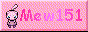Cool People
- tiny wanderer
- small web space for some of npckc's stuff
- team☆cpu
- website for team☆cpu, home of archangel:nemesis and other things
- Hubolhubolhubol
- Website for game developer hubol
- love ♥ game
- Website for game developers sylvie and aria
- Suricrasia Online
- Just the website for my Internet Service Provider
Video Gamez
- The Cutting Room Floor
- A wiki on unused video game content. Weirdly to me it serves as major game dev inspiration.
- TRsRockin Archive
- An archive of one of my favorite websites ever. Pokemon glitches and retro game reviews and so much more.
- Flying Omelette
- Miscellaneous video game content. I love the "oddities" section, especially about Earthbound/MOTHER 2.
- The Spriters Resource
- Sprites from every video game ever.
- Legends of Localization
- A site that discusses the localization of games.
- Hardcore Gaming 101
- A website that talks about many cool video games. I recommend the old site though.
Music
- NinSheetMusic
- Community of Nintendo music trascribers.
- Scooooore
- Sheet music from various things I like (BEMANI, PriPara, iM@S, etc.)
- Mark Prindle's Reviews
- Classic internet site with reviews of a lot of music, including highly entertaining Residents reviews.
- EWI やろうぜ！ (JP)
- A site by Japanese Youtuber EWI ココペリ dedicated to the EWI.
Communities
- LD4all
-
A community centered around lucid dreaming. It has been my internet home for many years. <3 - Zenius-I-vanisher
- BEMANI Forum, Stepmania file directory, and DDR Arcade Score Tracker
- The Talk of Creatures
- Small (mostly dead) but cozy and very awesome Residents forum
Random
- Skytopia
-
A website about science, music, illusions, and... fruit? Has
always given me
VSauce before VSauce
vibes. - corz.org
- Come for the .htaccess tips, stay for... all the other stuff.
- Windows 98 Icons
- A collection of Windows 98 icons, many of which I used for this site.
- Derpy
- Derpy
Neocities/Indie Sites
Here's some random Neocities sites I think are cool. Feel free to send me a link to your site and I might add it! (If you follow me on Neocities, I'll probably follow you back and put your link here!)
(Some of these sites are not on Neocities but are in the spirit of Neocities and have a button, so whatever!)
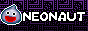


 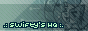
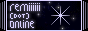
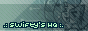
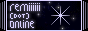

 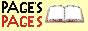
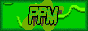
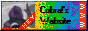
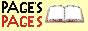
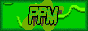
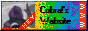
 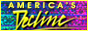
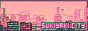
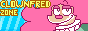
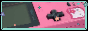
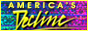
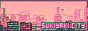
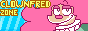
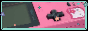